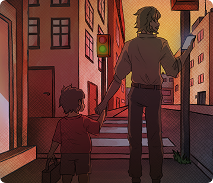

DAD’S DAY OUT
Game design · Research · Sound
A game about modern fatherhood.
01 Trailer
videos/project4-video.mp4 to this website folder.02 Overview
"Dad's Day Out" was created in a small team over three weeks to explore modern fatherhood through play. I did extensive research into fathers' experiences, different parenting styles, and how to recreate a believable family home.
I also created the game's design document to give the artists a clear visual direction and guide the programmer on mechanics. On top of that, I helped design and prototype simple interactive systems, including minigames like watering plants and playing the in-game Game Boy, and I composed the music to support the game's warm, everyday tone.
04 Scenes & process
Screenshots, development work and details
Listen to the project.
Music and audio created for Dad’s Day Out.